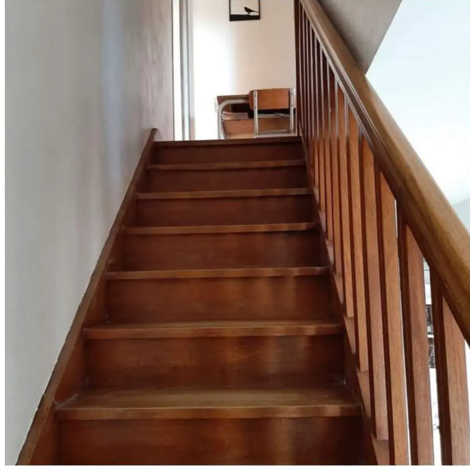

Avant / après
Avant / après{{titre}}
{{commune}} · {{lieuLabel}} · {{travauxLabel}}
{{texte}}

H Décoration
Espace pro
Jeudi 5 novembre

Rénovation d’un bar-restaurant
En ligne depuis le 2 novembre
Nouvelle réalisation
Étape {{stepNum}} sur 3
 AvantAprès
AvantAprèsAutres photos (facultatif)


Les photos sont allégées automatiquement avant l’envoi : pas besoin de les retoucher, même avec peu de réseau.
Astuce : le micro du clavier permet de dicter.{{texteLen}} / 300
Texte proposé à partir de vos photos et de vos choix. Relisez-le et corrigez-le avant de publier.
Titre de la page : {{seoTitre}}
Description : {{seoDesc}}
Description des photos : « Avant : escalier en bois verni orangé » · « Après : escalier gris anthracite, marches en bois clair »
Avant / après{{titre}}
{{commune}} · {{lieuLabel}} · {{travauxLabel}}
{{texte}}
Position GPS retirée des photos. Sur le site, seule la commune apparaît.
Cochez l’accord du client pour publier.
« {{titre}} » apparaît sur le site, dans les réalisations{{accueilPhrase}}.
h-decoration.fr/realisations/{{slug}}/
Demander un avis Google au client Option
Un SMS ou un e-mail avec le lien vers votre fiche Google, et une relance une semaine plus tard si besoin.